CS460 : Midway Report
Creating an AI bot to trade FOREX in the Stock Market
Submitted as part of course requirements for CS460: Machine Learning, Fall 2021
Offered by the School of Computer Sciences,
National Institute of Science Education and Research,
Bhubaneswar.
Course Instructor: Dr. Subhankar Mishra
Faculty Mentor: Dr. Amarendra Das
Collection of Data
Initially it was decided to collect the data from Yahoo Finance. However, the data did not suffice our requirements of exchange rate ticks at the interval of minutes to execute intra-day trades. Hence, the source of data was changed to MetaTrader 5 and FXCM.
MetaTrader 5
A Demo Account was set up at the Meta Trader Platform and the MT5 API was accessed using the allotted account ID and access token.
import MetaTrader5 as mt5
authorized_User = mt5.login(account_id, password="########", server="MetaQuotes-Demo")
The historical exchange rate for a pair of currencies for one month is retrieved via the RESTful API, at the interval of a minute.
eurusd_rates = mt5.copy_rates_range("EURUSD", mt5.TIMEFRAME_M1, datetime(2021,8,11), datetime(2021,9,10))
The retrieved pandas DataFrame Object is stored as a Python pickle for future use.
rates_frame.to_pickle('./OneMonthData.pkl')
FXCM
A Demo Account was set up with FXCM platform and the FXCM trading API was accessed by the fxcmpy package using an API token. A connection to the API is established.
import fxcmpy
con = fxcmpy.fxcmpy(access_token=API_TOKEN, log_level='debug', log_file='./logFile.txt', server='demo')
The historical ticks for the exchange rate for a pair of currencies for ten days were retrieved via the API, with the interval of a minute. Since the data for a month was not available for download at one go, the data was retrieved in three sets of ten days each.
start=dt.datetime(2021, 8, 11)
end=dt.datetime(2021, 8, 21)
data=con.get_candles('EUR/USD', period='m1', start=start, end=end)
The retrieved pandas DataFrame Object is stored as a Python pickle for future use.
data.to_pickle('./OneMonthData.pkl')
...financial engineers were hopelessly misguided... quants are at least partially to blame for the financial crisis. Why? They were silly enough to think you can look at the past to predict the future. But historical data remains the best way to forecast the future. When you use a financial model it requires assumptions about the underlying assets... the assets' expected price (on average) and volatility. Financial models find a price, and hedge against future fluctuations, based on these data points.
Analysis: Training Models
Linear Regression
Linear regression uses regression to detect, learn and extrapolate a trend in a given data-set and predict the direction of movement of the exchange rate in the future. We would be using the decades-old statistical technique of ordinary least squares fitting and linear regression for this problem.
Exchange Rate prediction is based on time series data - the ordering of the data is important, whereas, the order of the data-points does not affect the output of the linear regression problem in most cases. The optimal regression parameters would not change if the order of the (feature, label) pairs is changed in ordinary regression problems. However, for predicting the future exchange rate, order of the data is important.
To predict the future exchange rate, the exchange rate for the previous few days is taken as input. The number of days of input used is lags, which is guessed (a hyperparameter).
Assuming three lags for the regression, the feature vectors are constructed, using a rolling window of length three, to extract the immediately three preceding exchange rate tick values.
dataLags=np.lib.stride_tricks.sliding_window_view(data['close'], lags)[:-1,:]
The optimal regression parameters reinforce the hypothesis that the exchange rate is a random walk, with the best indicator of the upcoming exchange rate tick is the current tick value.
The results are not that encouraging with the predicted value of the next minute's exchange rate being roughly the current exchange rate, with the shift of the tick values of the original exchange-rate by one minute into the future.
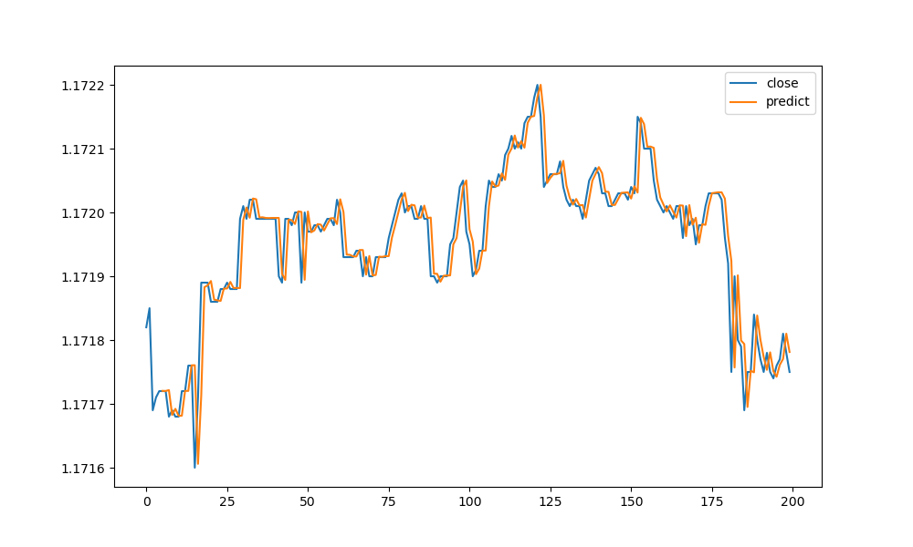
Constructing the feature vectors from the log returns instead of the absolute exchange rates led to better results. The log returns are defined by and implemented as
$$\log{returns}= log\left(\frac{Current\,Exchange \,Rate}{Preceeding\,Exchange\,Rate}\right)$$
data['returns']=np.log(data['close']/data['close'].shift(1))
The feature vectors are created as before with the log returns for lag number of preceding days and linear regression is applied to it.
dataLagReturn=np.lib.stride_tricks.sliding_window_view(data['returns'], lags)[:-1,:]
regReturns=np.linalg.lstsq(dataLagReturn, data['returns'][5:], rcond=None)[0]
data.loc[:,'logPredict']=pd.Series(np.dot(dataLagReturn, regReturns)).shift(lags)
As the figure below shows, linear regression could not predict the magnitude of the future exchange rates correctly (else we would have done the work of Gods!).
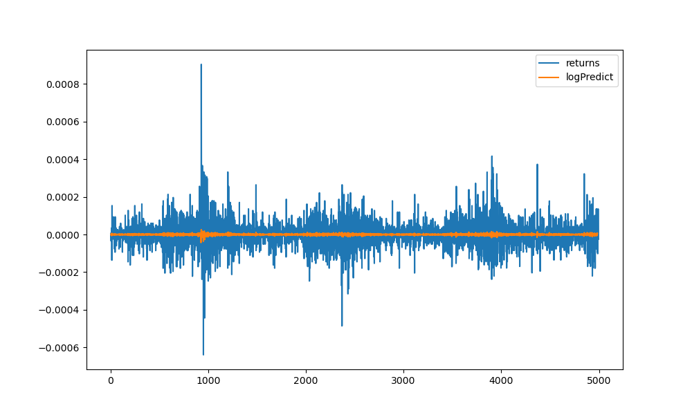
However, many a times knowing the direction of the movement of the exchange rate is also sufficient for placing FOREX trades. Denoting by +1, whenever the predicted direction is correct, and by -1 if it is incorrect, the hit ratio for our model is calculated.
hits=np.sign(data['returns']*data['logPredict']).value_counts()
Output:
1.0 3156
-1.0 1121
0.0 703
dtype: int64
Or in the training data, the model is able to predict 3125 times correctly out of 4980 trials, or a hit ratio of 60%.
Next, the question arises, can we simplify our model? Or, can the hit ratio be improved by implementing regression on the sign of log of the return values (predicting the direction of movement of the exchange rate in future by the direction of movement of the exchange rate in the immediately preceding tick values) instead of its value.
regReturns=np.linalg.lstsq(dataLagReturn, np.sign(data['returns'][5:]), rcond=None)[0]
data.loc[:,'signPredict']=pd.Series(np.sign(np.dot(dataLagReturn, regReturns))).shift(lags)
hits=np.sign(data['returns']*data['signPredict']).value_counts()
Output:
1.0 2550
-1.0 1727
0.0 703
dtype: int64
Well, for this data set, there was no improvement.
Hitting a high hit ratio does not guarantee that you will hit a jackpot, if you trade using this model. A model with a high hit ratio might still perform badly (giving you wealth a haircut) if it gets the abrupt, larger fluctuations in the exchange rates wrong. Therefore, in addition to the hit ratio, how well our model predicts the timing of the fluctuation also matters. By piggy-backing on the currency which is predicted to appreciate, the gross performance of the model over time is given by
data['strategy1']=np.sign(data['logPredict'])*data['returns']
data['strategy2']=data['signPredict']*data['returns']
print(data[['returns', 'strategy1', 'strategy2']].sum().apply(np.exp))
data[['returns', 'strategy1', 'strategy2']].dropna().cumsum().apply(np.exp).plot(figsize=(10, 6))
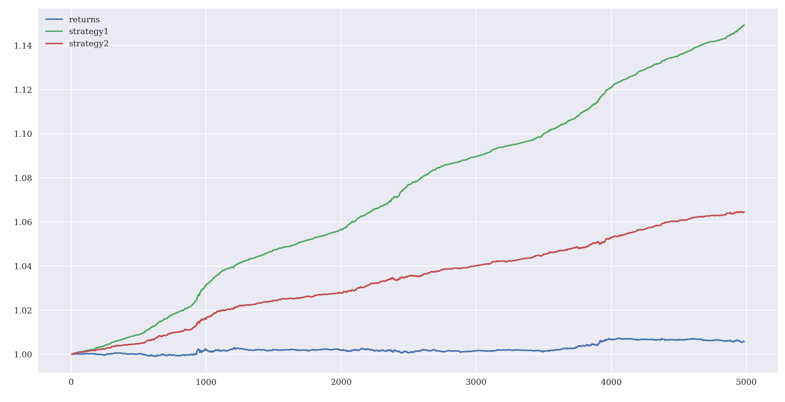
The first model (green line) uses the magnitude of log of the returns values while the second model (red line) uses the sign of log returns. The hit ratio of the second model is lower and, it performs much worse than the first model on validation on the training data.
Logistic Regression
While trading currencies, it is generally sufficient to predict whether a currency would appreciate or depreciate (direction in which the exchange rate would move) without predicting the absolute magnitude of the change. Therefore, the prediction problem can be considered as a classification problem, to classify whether the exchange rate would move up (+1) or down(-1). We have tried to implement logistic regression for this classification problem using a lag number of preceding tick values for the exchange rate.
As before, the feature vectors are created with a lag number of preceding tick values of the exchange rate.
data['return']=np.log(data['price']/data['price'].shift(1))
data.dropna(inplace=True)
lags=2
x=np.lib.stride_tricks.sliding_window_view(data['return'], lags)[:-1,:]
y=np.sign(data['return'][lags:])
Applying logistic regression on the dataset
model=LogisticRegression(C=1e7, max_iter=1000)
model=model.fit(x, y)
data['predict']=model.predict(x)
print(accuracy_score(data['predict'], np.sign(data['return'])))
print(confusion_matrix(np.sign(data['return']), data['predict']))
print(classification_report(np.sign(data['return']), data['predict']))
Output:
0.5050038491147036
[[386 0 264]
[ 2 0 1]
[376 0 270]]
precision recall f1-score support
-1.0 0.51 0.59 0.55 650
0.0 0.00 0.00 0.00 3
1.0 0.50 0.42 0.46 646
accuracy 0.51 1299
macro avg 0.34 0.34 0.33 1299
weighted avg 0.50 0.51 0.50 1299
return 0.950105
strategy 1.010645
dtype: float64
Although logistic regression looked promising, it performed badly on the training data. And this so-so performance was obtained on daily closing exchange rate values for the currency pair USD/EUR, with a lag period of 3.
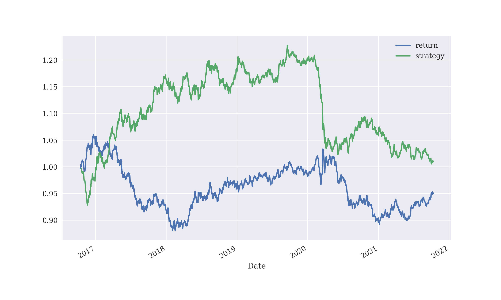
Increasing the lag period to 5, affects performance adversely
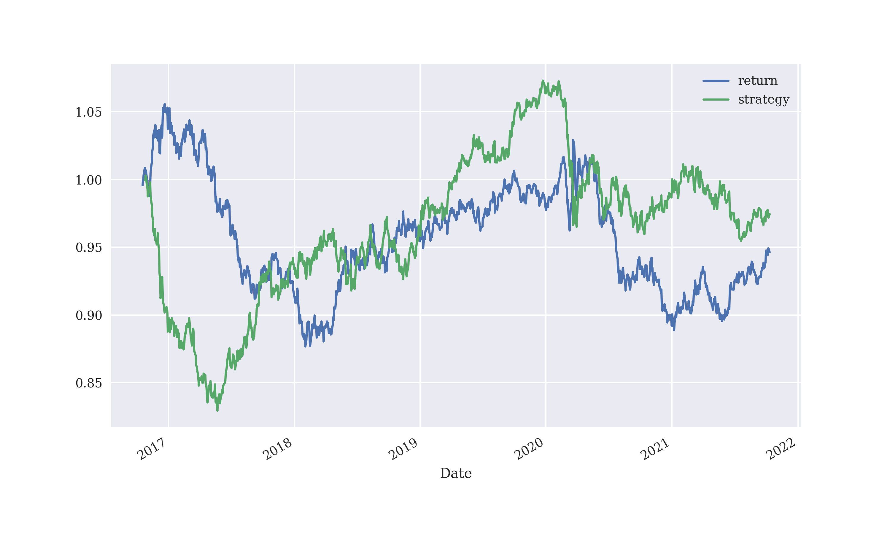
Decreasing the lag period to 2, does not affect performance greatly
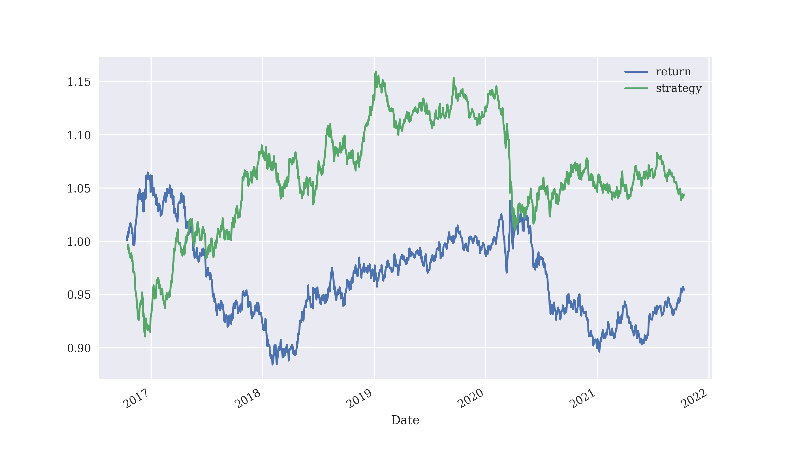
However, the greatest setback was that logistic regression seemed to not work at all when applied with tick values of exchange rates at an interval of a minute.
Output:
return 1.009064
strategy 1.009038
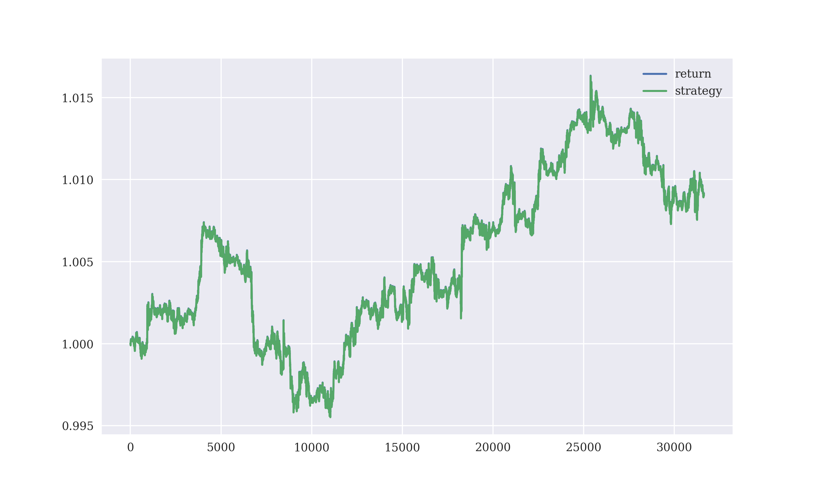
Auto-Regressive Integrated Moving Averages
The tick values of the exchange rate for a pair of currencies forn a ime series, and we have thought of applying Auto-Regressive Integrated Moving Averages (ARIMA) to it. Why ARIMA?
For ARIMA to work, the time series should be stationary, or the time series should not have a predictable pattern in the long-term (else we can use that pattern for prediction). Taking log stabilizes the variance of the time series while taking differences stabilizes the mean. A stationary time series can be identified with an autocorrelation plot.
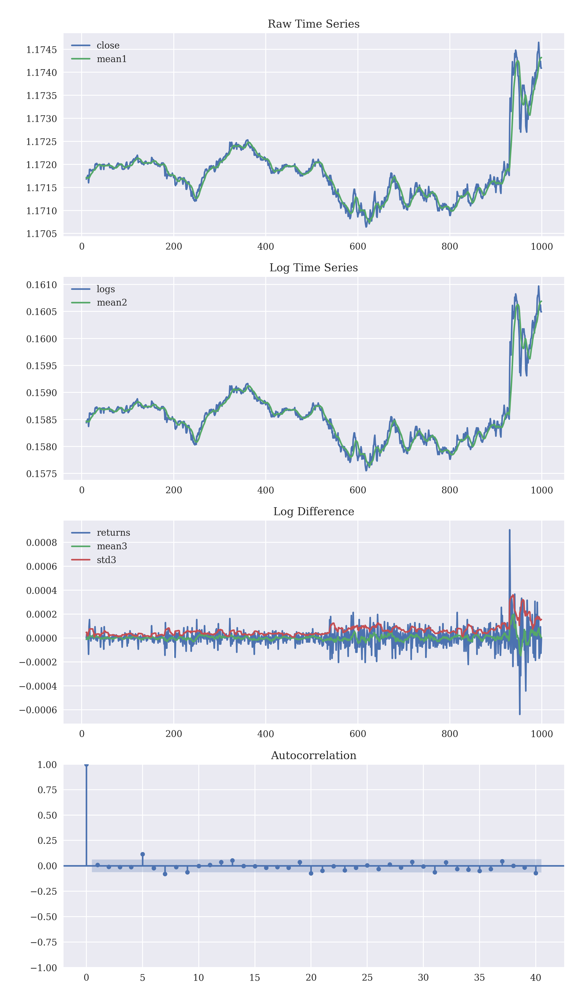
The data was initially non-stationary, but taking the difference of the logs made it stationary. The autocorrelation drops to zero quickly, further indicating that it is stationary. We would be predicting the exchange rate by a linear combination of the past exchange rates, or by autoregression (regression against itself). Rather than using the past values of the exchange rate, the moving averages too. Combining the differencing with autoregression and moving averages gives an Auto-Regressive Integrated Moving Average model ('integration' as the inverse of differencing).
An ARIMA model has three parameters, $$p = \text{order of the autoregression},\\ \, d = \text{degree of differencing},\\ \, q = \text{order of moving average}$$ We would be using the pmdarima package to implement ARIMA models.
An ARIMA model is fitted to the stationary data.
model=pm.auto_arima(data['logs'][0:100], start_p=0, strat_q=0, start_P=0, start_Q=0, d=0, max_p=5, max_q=5, max_P=5, max_Q=5, seasonal=False)
And the prediction is validated over the next 100 tick points of the exchange rate.
validate=pm.model_selection.SlidingWindowForecastCV(window_size=100)
preds=pm.model_selection.cross_val_predict(model, data['logs'], cv=validate)
data['predict']=np.concatenate((data['logs'][0:100], preds))
The resulting plot of actual and the predicted exchange rate are
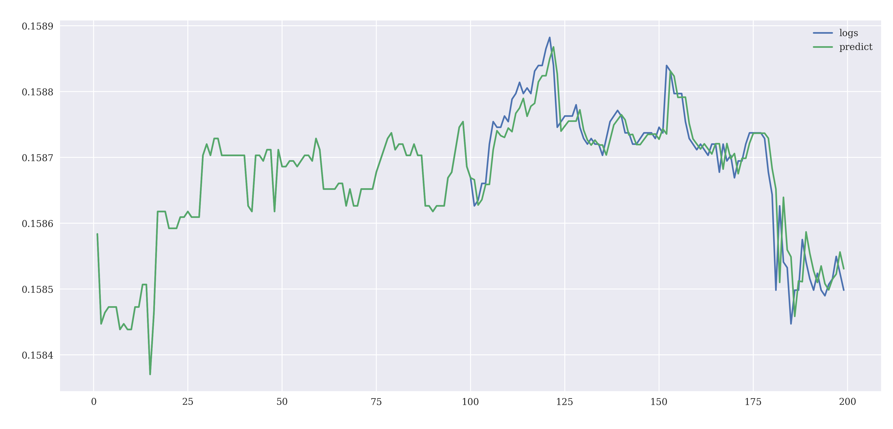
To get the performance of the model, the returns were calculated by implementing the ARIMA strategy.
preds, conf_int=model.predict_in_sample(start=100, end=1999, dynamic=False, return_conf_int=True)
data['predict']=np.concatenate((data['logs'][0:99], preds))
data['predictReturns']=data['predict']-data['predict'].shift(1)
data['strategy']=np.sign(data['predictReturns'])*data['returns']
Output:
returns 1.001775
strategy 1.090382
dtype: float64
The returns from the ARIMA model were comparable to the linear regression implemented.
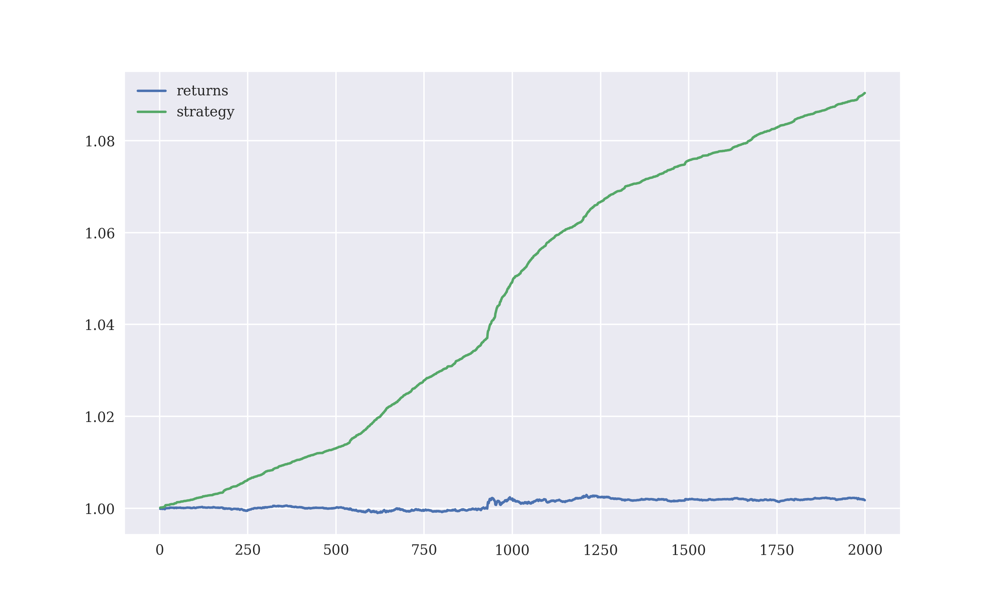
Facebook Prophet
Facebook Prophet is an open-source package to predict time series. Facebook Prophet was used to predict the exchange rate in future given the exchange rate for a past few years at daily intervals.
The DataFrame was prepared to match the required input for the fbProphet model, a ds(datestamp) column and the corresponding y(measurement to predict) column.
from prophet import Prophet
raw=pd.read_csv('./USDEUR.csv')
data=raw[["time","close"]]
data=data.rename(columns={"time": "ds", "close": "y"})
data.head()
The data was fit to an fbProphet model with a call to the fit() method.
model=Prophet(changepoint_prior_scale=0.01)
fit=model.fit(data)
A call to the predict() method predicts the future values yhat.
future=model.make_future_dataframe(periods=365)
forecast=model.predict(future)
forecast[['ds', 'yhat', 'yhat_lower', 'yhat_upper']].tail()
The plot is generated by the plot() method.
fig=model.plot(forecast)
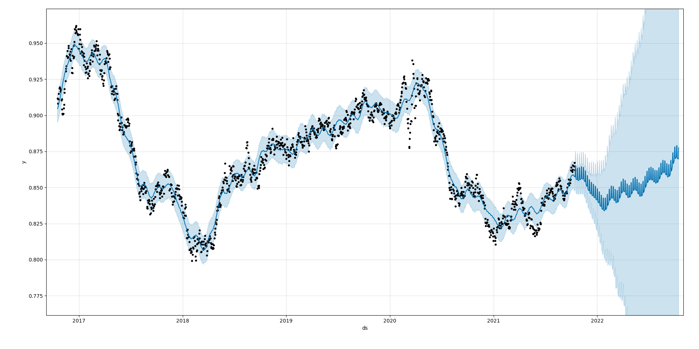
Zooming into the recent predictions...
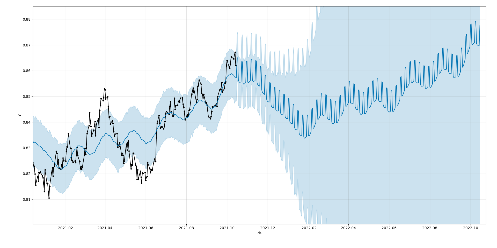
When Facebook Prophet was implemented on the data of the exchange rate at one minute intervals, the model underfits the data as the predicted values do not match the original values at all.
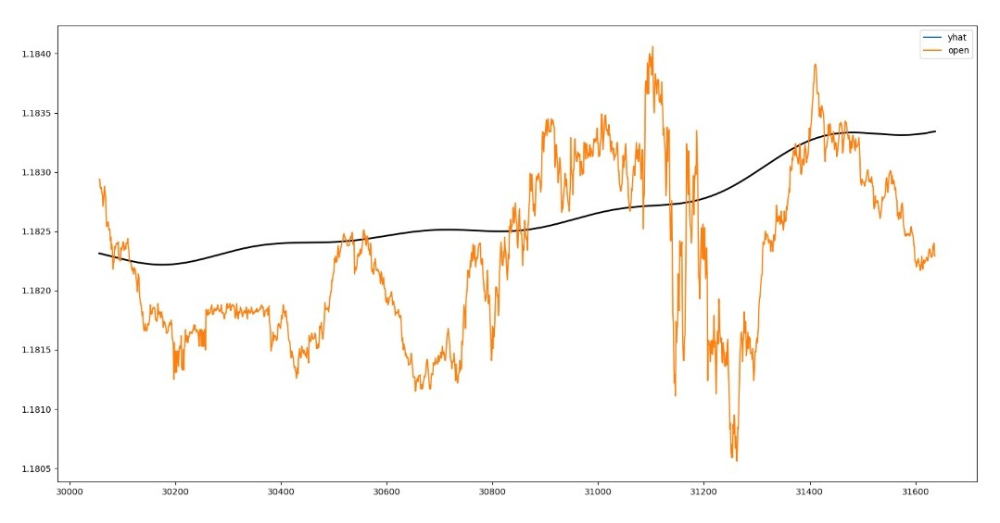
Results: Testing Models
Linear Regression?
A realistic picture of the performance of the model is obtained by training the model, or fitting the model on some portion of the data and evaluating the performance of the model on the testing data (unseen for the model while training). The number of lags is taken as an input by the script.
The prediction of the returns for the test data are
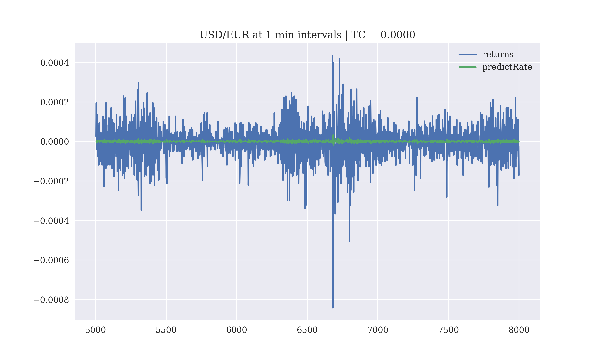
The performance of the regression based model with a lag of 5 days, without transaction costs is
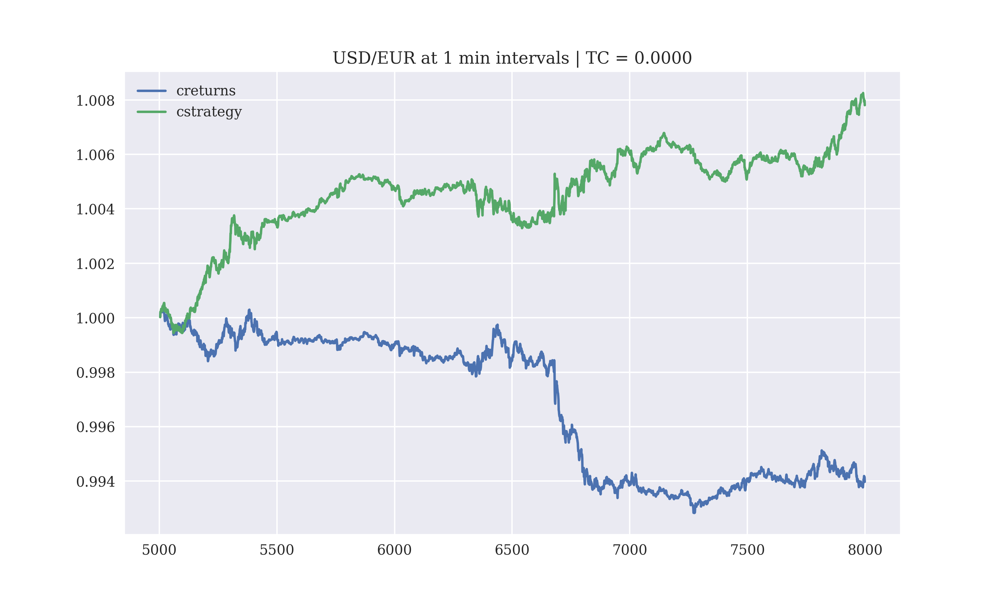
Output:
Gross Performance: 0.013829
Hit Performance:
1.0 1382
-1.0 1250
0.0 364
dtype: int64
Perceptron?
A second linear model was also implemented where the sign of the returns of the previous few return values of the exchange rate tick was used to determine the sign of the immediately upcoming return value for the exchange rate tick. Since, the sign can have only two possible values (+1, -1), the problem is equivalent to classifying whether the next return would be positive or negative, a classification problem. The number of lags is taken as an input in this script too.
The performance of the perceptron like model with a lag of 5 days, without transaction costs is
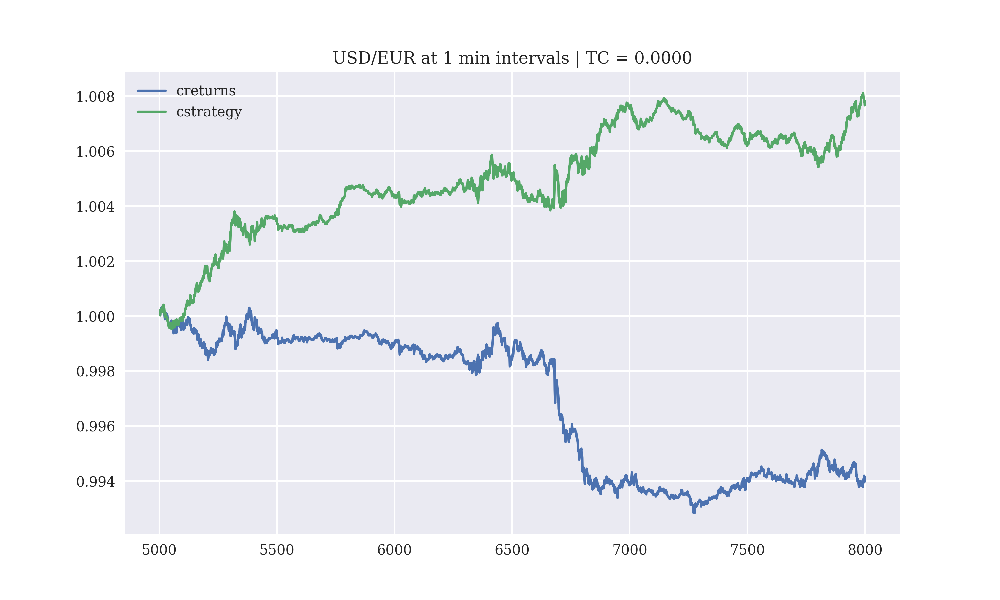
Output:
Gross Performance: 0.013691
1.0 1351
-1.0 1281
0.0 364
dtype: int64
The performance of the perceptron model is not much worse than the linear-regression based model, with a minor decrease in the hit ratio.
Logistic Regression?
Logistic regression was implemented to predict whether the next return would be positive or negative using the returns for the previous few return values of the exchange rate tick. Since the return can have only two possible values (+1, -1), the problem is a classification problem. Logistic regression does not perform at all on trades at an interval of a minute. The number of lags is taken as an input in this script too.
The performance of the logistic regression model with a lag of 3 days, without transaction costs results in a loss making strategy for executing trades at an interval of a day
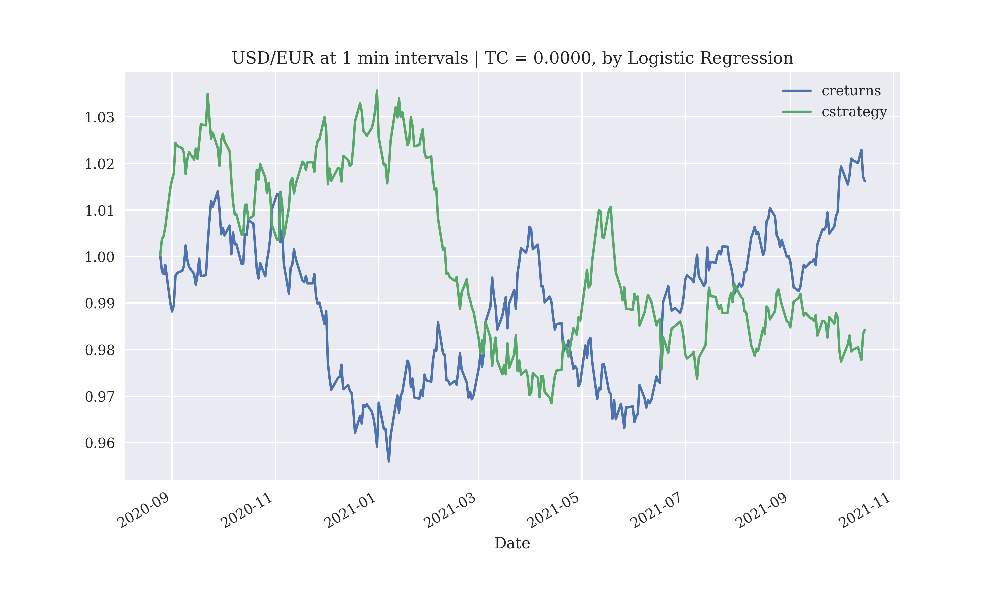
Output:
Gross Performance: -0.027518
-1.0 155
1.0 140
0.0 2
dtype: int64
The performance improves when the lag is increased to 7 days, without transaction costs results in profits executing trades at an interval of a day, but does not work for executing trades at the interval of a minute
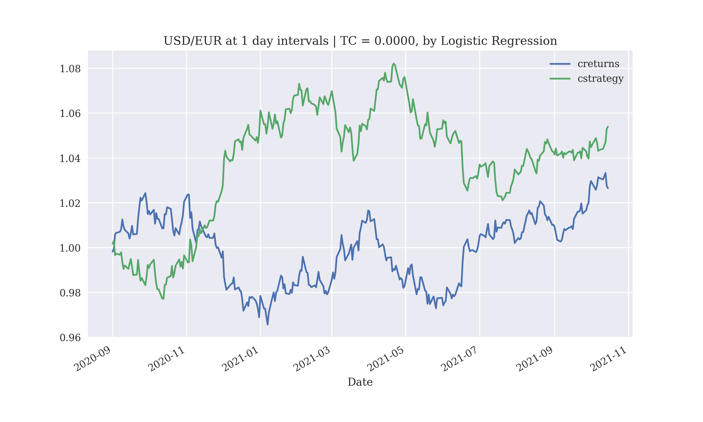
Output:
Gross Performance: 0.027408
1.0 156
-1.0 135
0.0 2
dtype: int64
The performance of the logistic-regression based model does not seem suitable for the execution of intra-day (15 minute) trades.
ARIMA Time-Series Forecasting?
The arima.auto_arima() is used to fit an optimal parameter ARIMA model. It conducts differencing tests to determine the parameter d, and fits an optimal value in the range start_p, max_p and start_q, max_q, by grid search. The fit plots for the ARIMA model are
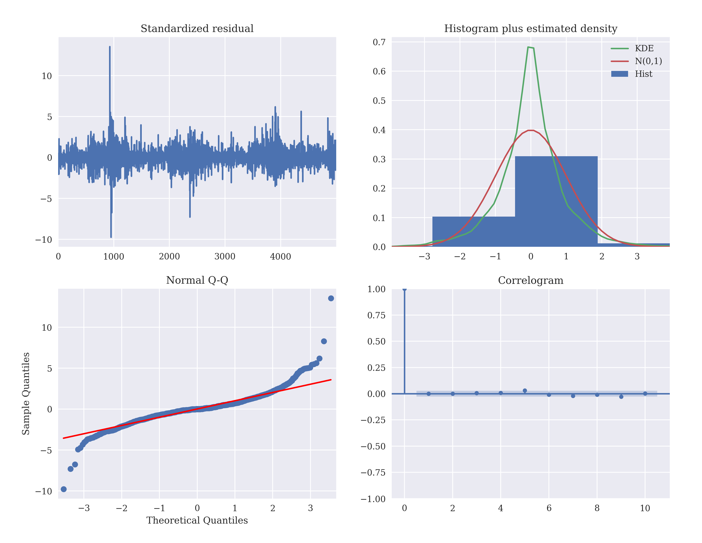
- The normalized residuals (difference between the predicted and actual values) in the first plot are noise-like or uncorrelated, and have a zero mean (no bias) and near-zero variance.
- The second plot has a histogram of the observed distribution, an estimated density plot of the normalized residuals (green plot) and a normalized Gaussian (red plot) for comparison.
- The quantile-quantile plot roughly follows a straight-line indicating a Normal distribution, with 'curve-off' at the extremities indicating 'heavy tails' (the data has more extreme values than expected from a normal distribution).
- The correlogram in the fourth plot reinforces the 'random-walk' hypothesis as the correlation falls to zero immediately on a small shift.
The performance of the ARIMA model on the testing-data for the prediction of the future exchange-rate is
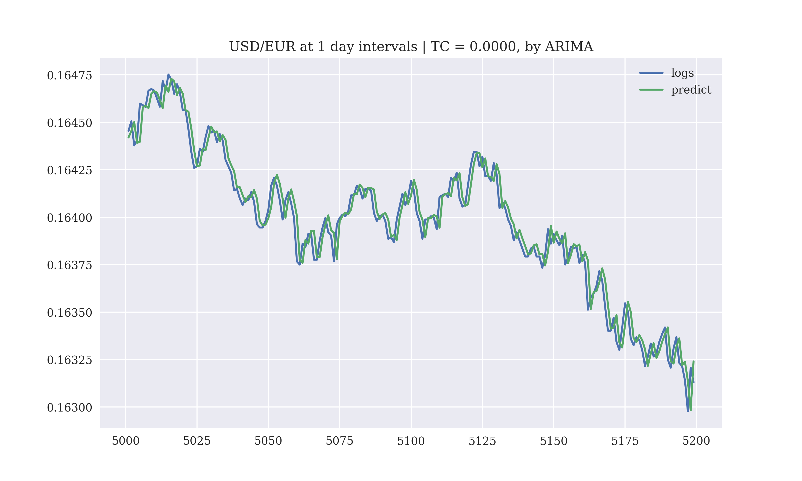
Using an ARIMA model to execute trades, the gross performance for the next 3000 tick values is
Output:
Gross Performance: 0.009446
-1.0 1360
1.0 1290
0.0 348
dtype: int64
The gross return for 3000 predictions in the future is
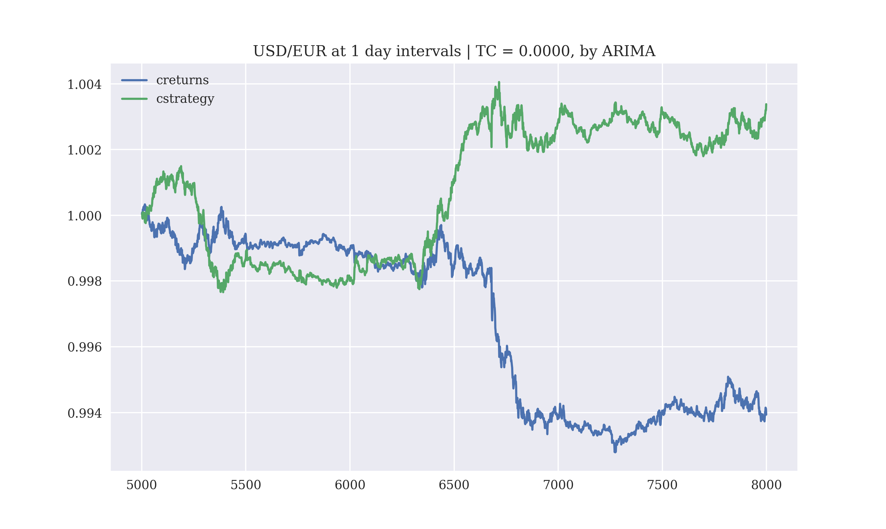
| Predicted | Actual |
|---|---|
| 0.16445455 | 0.16441765 |
| 0.16450546 | 0.16445168 |
| 0.16437820 | 0.16450136 |
| 0.16440365 | 0.16437923 |
| 0.16459877 | 0.16440540 |
| 0.16459028 | 0.16459131 |
| 0.16458180 | 0.16458353 |
| 0.16466662 | 0.16458047 |
| 0.16467510 | 0.16466302 |
Facebook Prophet?
The performance of the Facebook Prophet model on the testing-data for the prediction of the future exchange-rate (blue line) at five minute intervals for the next fifteen days against the actual data (orange data) is
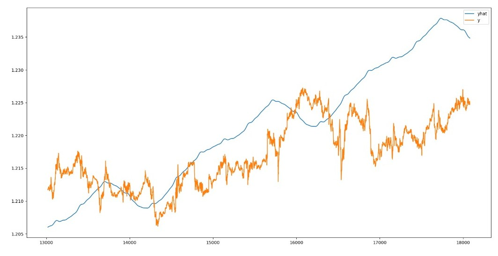
Up Ahead?
- Factoring in the transaction costs to make the trades more realistic. After factoring in the trading costs, the strategy would have to balance the trade-off between the number of possible trades that can be executed and the profit from the trade, trying to choose which subset of trades to go for out of the set of possible trades, to maximise the profit with trading costs.
- Automating the entire process to get the value of the exchange rate tick in real-time, predict the return and place the possible trade.
- If time permits, we would try to 'manufacture' some extra features like momentum, volatility, maximum drawdown and maximum drawdown period perhaps.
- Turn on the heat using leverage.